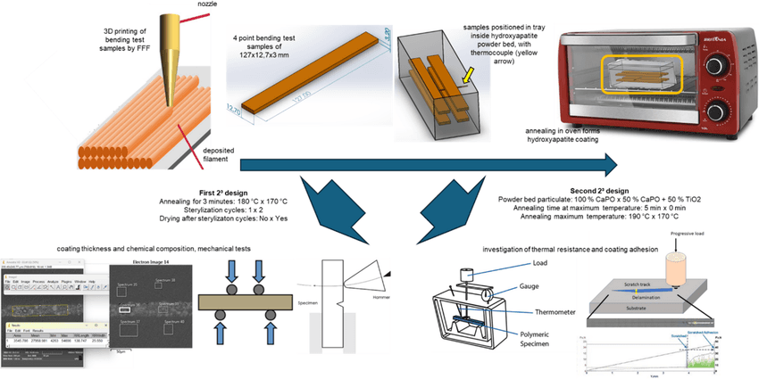

PLA imprimé en 3D, biocompatible et résistant à la stérilisation
Recherche sur les matériaux · Université fédérale d’Uberlândia
Présentation du projet
Le PLA s’imprime facilement en 3D, mais les pièces ordinaires ramollissent à des températures relativement basses et peuvent être difficiles à revêtir durablement. Cette étude examine un traitement thermique unique qui renforce le polymère imprimé et lui ajoute un revêtement minéral d’hydroxyapatite, avec une application potentielle aux implants orthopédiques personnalisés.

Imprimer, chauffer et revêtir
Nous avons imprimé des éprouvettes en 3D, puis les avons enfouies dans de la poudre d’hydroxyapatite (HA), seule ou mélangée à du dioxyde de titane, avant de les chauffer entre 170 et 190 °C. Le lit de poudre a soutenu les pièces pendant le recuit tandis que les particules minérales formaient un revêtement en surface. Nous avons comparé différentes conditions de traitement et de stérilisation.

Examiner la couche minérale
Nous avons examiné les coupes au microscope électronique pour comprendre comment la couche minérale adhérait au PLA. La cartographie du calcium a permis de localiser l’hydroxyapatite dans la zone superficielle. Les images et les analyses chimiques ont montré que les particules de HA pénétraient dans le polymère.


Les revêtements obtenus avaient une épaisseur d’environ 20 à 50 µm. Ils sont restés stables après la stérilisation, en particulier sur les éprouvettes recuites à 180 °C.
Vérifier la résistance à la chaleur et à la stérilisation
Nous avons soumis les pièces à une charge en augmentant la température pour mesurer le début de leur fléchissement. Le montage utilisait un four, un thermocouple et un système Arduino pour surveiller et réguler le chauffage. L’étude a aussi comparé des cycles d’autoclave avec différentes conditions de séchage.

Le recuit en lit de poudre a porté la température de fléchissement sous charge d’environ 65 °C à au moins 150 °C, ce qui a permis une stérilisation en autoclave sans déformation.
Mesurer l’adhérence du revêtement
Un dispositif de rayure sur mini-CNC déplaçait un pénétrateur sur la surface revêtue en augmentant progressivement la charge. Nous avons mesuré à quel moment la couche commençait à se décoller. Des essais de flexion et de choc ont aussi permis d’étudier le comportement mécanique des pièces traitées.

Les valeurs d’adhérence mesurées étaient comprises entre 83 et 139 MPa. Les éprouvettes traitées à 180 °C ont montré la plus grande résistance à la flexion, jusqu’à 37 MPa. Dans certaines conditions, la résistance au choc a augmenté de plus de 100 % après stérilisation.
Résultats de l’étude
Un seul traitement peut associer renforcement mécanique, stabilisation thermique et revêtement minéral. Les résultats indiquent une piste de fabrication d’implants personnalisés en PLA résistants à la stérilisation. Leur aptitude à un usage clinique reste à établir.
Publication scientifique
Adhesion, sterilization resistance and heat deflection temperature of 3D printed PLA parts coated with hydroxyapatite by powder bed annealing. The International Journal of Advanced Manufacturing Technology, 145(11–12), 8187–8206 · Juillet 2026.
Lire l’article scientifique (en anglais)Figures reproduites à partir de la publication fournie par Kauã Almeida · CC BY 4.0 · Texte explicatif adapté pour ce portfolio.